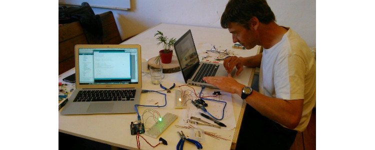
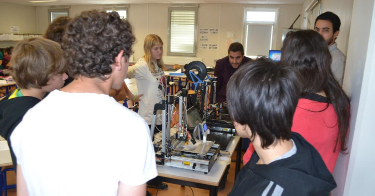
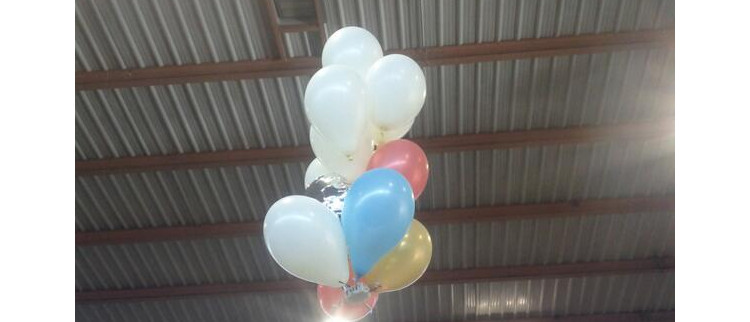
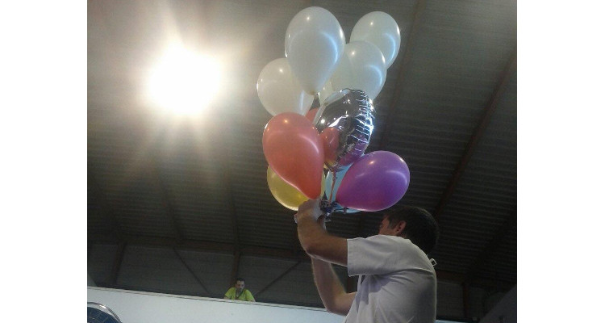
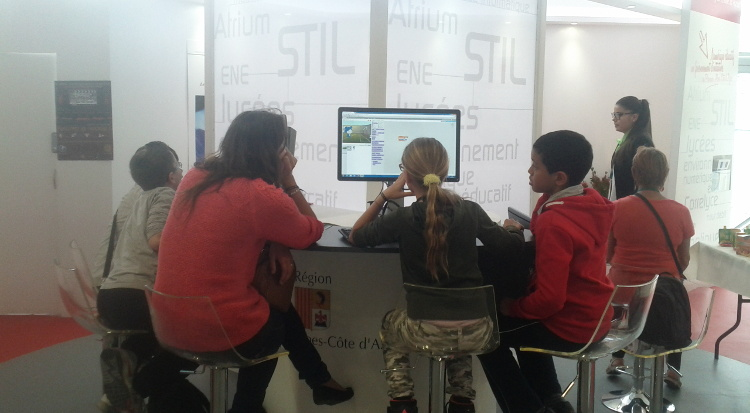

Soirée #Geekbidouille de Mai
Sébastien NEDJAR
Soirée #Geekbidouille de Mai

- Actualités
- Benoît fera un bilan d’étape des écrous
- Retour des lycéens de Cézanne sur leur mini-entreprise
- Présentation de l’Arduino Zero
- Formation Arduino à la Fabulerie
- Mise en place d’ateliers hebdomadaires
- Deuxième atelier Fab Lab avec le collège Malraux
- Concours Entreprendre Pour Apprendre
- Startup Week-end
- Bus Numérique
- Formation Modélisation 3D 2/2
- Salon Pix&Tech
- Coding Goûter aux rencontres de l’Orme
- Souk des sciences
- Deux premiers jours pour découvrir les bases d’Arduino (Entrées/sorties, affichage, actionneurs, …)

Mise en place d’ateliers hebdomadaires
- Grâce aux ressources de la formation Arduino, nous avons mis en place des ateliers hebdomadaires.
- Tous les mercredi à partir de 18h
- Pour l’instant nous avons 4-5 participants chaque semaine
- Coût 50 <> par atelier
Deuxième atelier Fab Lab avec le collège Malraux

Concours Entreprendre Pour Apprendre

- Animation d’un stand pendant toute une journée
- Création d’un dirigeable DIY

- Animation d’un stand pendant toute une journée

Coding Goûter aux rencontres de l’Orme

- Intervention au collège Belsunce
- Anniversaire d’Evolix
- Coding Goûter lors des rencontres REUNIC d’Arsenic
- Maker Faire Paris